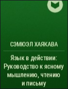

Советы почитать
от Жака
16 книг от Жака Фреско
Драма океана
Год издания: 1982
Издательство: Судостроение
Язык: Русский
Издательство: Судостроение
Язык: Русский
Категория: География
Тирания слез
Год издания: 1922
Издательство: Жаков
Язык: Русский
Издательство: Жаков
Язык: Русский
Категория: Политика
Драма океана
Год издания: 1982
Издательство: Судостроение
Язык: Русский
Издательство: Судостроение
Язык: Русский
Категория: География
Виды
Год издания: 2015
Издательство: Эксмо
Язык: Русский
Издательство: Эксмо
Язык: Русский
Категория: Биология
Машины
Год издания: 1987
Издательство: Ancord
Язык: Максиканский
Издательство: Ancord
Язык: Максиканский
Категория: Пофиг
На картинке
Год издания: 988
Издательство: Не церковь
Язык: Ежжи
Издательство: Не церковь
Язык: Ежжи
Категория: Море крови

Перегар
Год издания: 2022
Издательство: Будущее
Язык: Инглиш
Издательство: Будущее
Язык: Инглиш
Категория: Реальность
Грут
Год издания: 2182
Издательство: Лес
Язык: Грутский
Издательство: Лес
Язык: Грутский
Категория: Отношения

Травка
Год издания: 666
Издательство: Грин пис
Язык: Раста
Издательство: Грин пис
Язык: Раста
Категория: Косячная
Самогон
Год издания: 2015
Издательство: Бар
Язык: Несвязный
Издательство: Бар
Язык: Несвязный
Категория: Отдых
Капитал
Год издания: 1001
Издательство: Сникерс
Язык: Марс
Издательство: Сникерс
Язык: Марс
Категория: Карл Маркс
Скажие
Год издания: 2008
Издательство: Этому
Язык: Обэме
Издательство: Этому
Язык: Обэме
Категория: Ну вы поняли